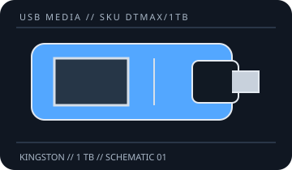

[ REMOVABLE MEDIA // USB FLASH DRIVE ]
DataTraveler Max USB-C 1 TB (DTMAX/1TB)
A model- and capacity-specific record for the removable USB flash-drive device, not a general promise for every revision sold under the same family name. Verify the complete SKU and capacity on the label.

PRODUCT: Kingston DataTraveler Max USB-C 1 TB (DTMAX/1TB). A physical USB connector fit does not prove that a host supports the drive's capacity, filesystem, power needs, or advertised bus mode.
Model, interface and compatibility
| Manufacturer model / SKU | Kingston DataTraveler Max USB-C 1 TB (DTMAX/1TB) |
|---|---|
| Nominal capacity | 1 TB; formatted usable space is lower and varies by filesystem and host. |
| USB generation / connector | USB 3.2 Gen 2; USB Type-C. |
| Host compatibility | Kingston lists Windows 11/10/8.1, macOS 10.14 or later, Linux 2.6 or later, and Chrome OS for the family; requires a USB Type-C port. USB 3.2 Gen 1 and USB 2.0 hosts at the host-supported rate. |
| Dimensions | 82.17 × 22.00 × 9.02 mm; dimensions are manufacturer-stated for the named model/family. |
| Manufacturer speed claim | Up to 1,000 MB/s read and 900 MB/s write (manufacturer maximum claims; host, workload, and capacity can affect results). |
| Encryption | No hardware encryption feature is specified in the cited DataTraveler Max documentation; do not assume password protection or secure erase. |
Wear, encryption and preservation caveats
Flash memory wears with writes, and controller, NAND, firmware, age, temperature, and storage conditions affect retention and failure risk. No shelf-life or archival-life guarantee is inferred from this product record. The manufacturer documentation cited here does not establish a guaranteed service life or archival retention period.
- No hardware encryption feature is specified in the cited DataTraveler Max documentation; do not assume password protection or secure erase. Do not treat an unencrypted USB stick as a secure transport or a sole copy of important data.
- Write endurance, wear-leveling behavior, and power-loss recovery are not quantified here unless explicitly stated by the manufacturer for this exact SKU; do not infer them from a speed or warranty claim.
- Use safe removal where required by the host's write cache, keep the device dry and protected from impact, and do not remove it during activity.
- For preservation, keep at least two independent additional copies, record checksums, periodically read/verify the data, and migrate it to supported media. Flash storage is not a substitute for a preservation plan.
Manufacturer sources
- Kingston — DataTraveler Max product detailsManufacturer source for the identified product family/SKU; capacity and revision markings should be matched to the physical unit.
- Kingston — DataTraveler Max technical support and downloadsManufacturer source for the identified product family/SKU; capacity and revision markings should be matched to the physical unit.
- Kingston — DataTraveler Max datasheetManufacturer source for the identified product family/SKU; capacity and revision markings should be matched to the physical unit.
Any stated maximum speed is a manufacturer claim, not a guaranteed sustained rate; real results depend on the complete host path, file sizes, filesystem, and device revision.